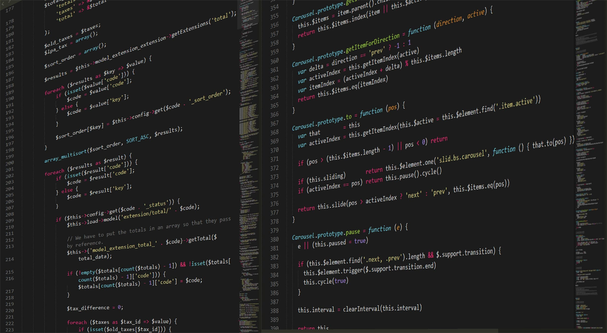

Vladimir Prisyazhnikov
Vladimir Prisyazhnikov
Представление моих умений в каждом навыке
Пишу скрипты, автоматизирую с помощью него тривиальные вещи
Пишу некоторые веб-приложения с использованием этого фреймворка. Данное портфолио написано на нём (ниже ссылки на блог с записями)
Использую на базовом уровне в моих проектах
Пишу на нем некоторые скрипты. Бывает крайне удобным и в некотором роде даже красивым
Без него порой никуда. Хотя тот же Python или Go, куда логичнее и удобнее
Каждый день работаю с ним.
Использую в проектах с php. К примеру, поисковик или task-manager не обошлись бы без него
Стараюсь использовать чаще и прохожу курс по данному языку
Регулярно использую в работе над всеми проектами
Регулярно использую в работе над всеми проектами
Стараюсь регулярно использовать данный фреймворк в проектах
Стараюсь чаще включать в работе с css
Стандартный бутстрап. Всеми любимый и удобный. Вполне уверенно использую его. Ускоряет многие тривиальные задачи
Он как бутстрап, только с комьюнити разных людей, которые регулярно делятся наработками. Мне он понравился
Нравится тем, что можно кастомизировать как угодно, по-своему усмотрению
Пробовал в тестовой работе. Ничего сложного